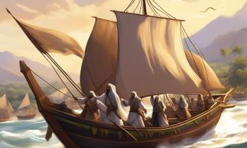

 Teori Arab
“Teori Arab dan Jejak Perjalanan Agama yang Megah”
Pada zaman dahulu, masuknya Islam ke Nusantara telah menjadi topik yang diperdebatkan oleh para sejarawan. Salah satu pandangan yang diperjuangkan oleh beberapa tokoh terkenal seperti Buya Hamka dan van Leur adalah Teori Arab. Menurut Teori Arab, agama Islam tiba di Nusantara pada abad ke-7 melalui perantau dari Arab yang dengan tekad bulat berusaha menyebarkan ajaran Islam secara global. Pandangan ini didukung oleh beberapa bukti yang cukup menarik. Salah satunya adalah keberadaan perkampungan Arab di Barus, Sumatera Utara, yang dikenal sebagai Bandar Khalifah. Perkampungan ini menjadi tempat tinggal bagi para perantau Arab yang memainkan peran penting dalam penyebaran Islam di wilayah Nusantara.
Seiring berjalannya waktu, Islam semakin mengakar di Nusantara dan mazhab Syafi'i menjadi dominan di daerah Samudera Pasai. Mazhab ini juga populer di negara-negara Arab dan Mesir pada masa itu. Fakta ini menunjukkan adanya keterkaitan budaya dan pengaruh Islam antara Nusantara dan dunia Arab pada saat itu. Selain itu, penggunaan gelar Al-Malik oleh raja-raja Samudera Pasai juga mencerminkan pengaruh budaya Islam yang kuat, mirip dengan praktik yang ada di Mesir.
Namun, meskipun Teori Arab memiliki sejumlah bukti yang mendukungnya, pandangan ini juga mendapat kritik dari beberapa pihak. Salah satu kritik yang sering diajukan adalah kurangnya sumber tertulis yang memadai untuk menjelaskan peran bangsa Arab dalam penyebaran Islam di Indonesia. Beberapa sejarawan berpendapat bahwa sumber-sumber tersebut masih terbatas dan tidak memberikan gambaran yang komprehensif tentang peran Arab dalam proses pengislaman di Nusantara.